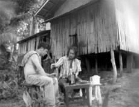

|
WALANG ALAALA ANG MGA PARU-PARO (Butterflies Have No Memories)
Lav Diaz | Südkorea 2009 | 58 Min.
Material: DV
Format: Mini-DV
Originalsprache: Tagalog, Englisch
Buch: Lav Diaz
Kamera: Lav Diaz
Schnitt: Lav Diaz
Mit Dante Perez, Kristine Kintana, Joel Ferrer, Willy Fernandez, Lois Goff, Edward Porta
Produktion: Lav Diaz
Vertrieb: Jeonju International Film Festival
Eine phillipinische crime story. Martha ist in ihrer Kindheit mit ihren Eltern nach Kanada ausgewandert und kehrt jetzt zurück in ihr Heimatdorf. Früher war das Dorf einmal vermögend, jetzt aber hat die Mine dicht gemacht, die für die Bewohner lange Zeit die einzige Erwerbsquelle war. Martha trifft sich mit Mang Ferding und seinem Freund in einem Café und provoziert die beiden mit ihrem Reichtum, Blondheit und American speaking, bis es zu einer düsteren, selbstzerstörerischen Wendung kommt. Der Film entstand als Beitrag für das Jeonju Digital Project.
Lav Diaz, geb. 1958 in Cotabo / Philippinen. Lebt und arbeitet auf den Philippinen. In den frühen 90er Jahren ging Diaz in die USA und arbeitete dort als Journalist. Parallel dazu begann er als Drehbuchautor zu arbeiten und sein erstes opus magnum „Batang West Side“ zu drehen. Diaz gehört zu den philippinischen Independent-Regisseuren, die international durch ihre digitalen Filme über die philippinische "Seele" auf sich aufmerksam machen. Diaz spielt außerdem Gitarre bei der Filmemacher-Rockband „Brockas“.
Filme (Auswahl): 2009 Butterflies have no Memories | 2008 Melancholia, Purgatorio | 2007 Death in the Land of Encantos | 2006 Heremias | 2004 Evolution of a Filipino Family (UNDERDOX 01) | 2002 Batang West Side | 1999 Burger Boys | 1998 The Criminal of Barrio Concepcion
zurück
|